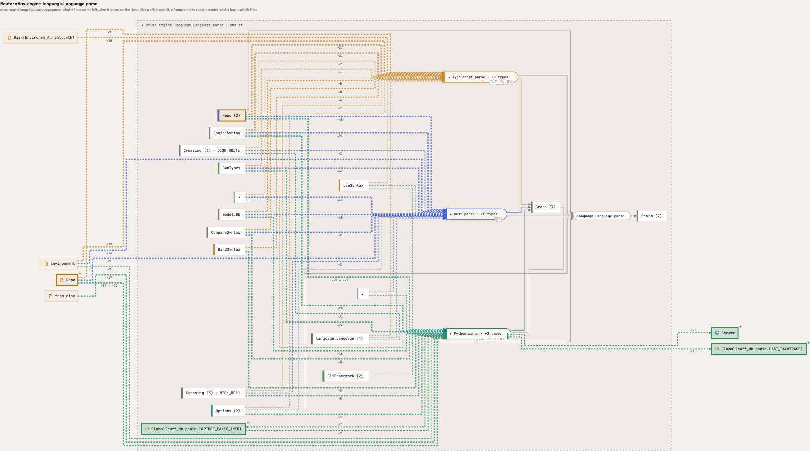
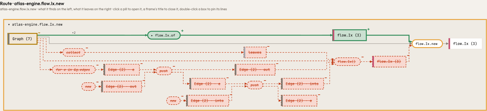
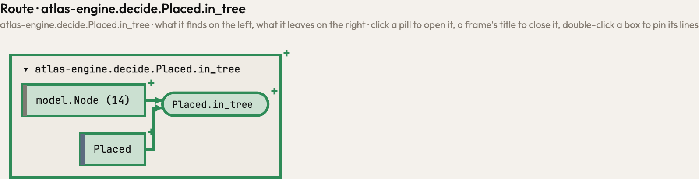
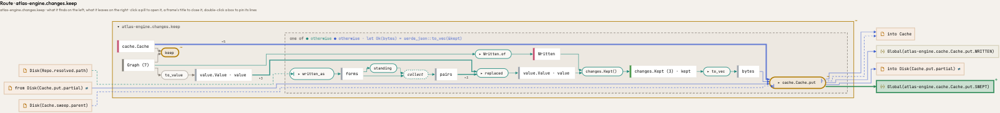
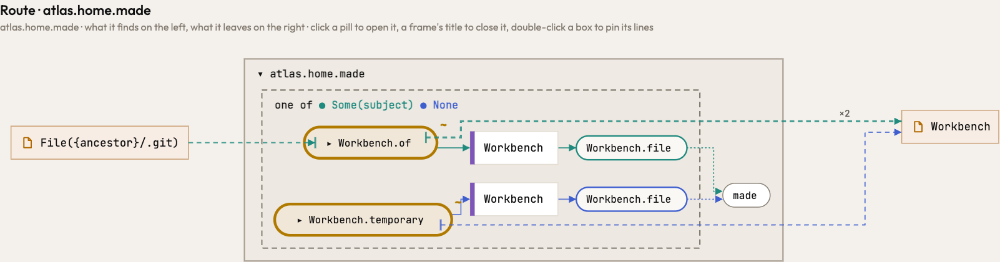

Release 0.70.0
What changed in Atlas 0.70.0
Atlas 0.70.0 reads a library's facts only where ty finds that library, works out what a call runs once for everything that asks, and writes into your tree exactly what it is asked to. atlas serve and atlas mcp keep the notes you and your agent share whole, and a fault in one file or one call no longer ends the run.
A library's facts hold where ty finds that library
Atlas read x.home() as your home directory and x.joinpath(..), x.with_suffix(..), x.parent and Path(..) as a path's, whatever x was. They now hold only where ty finds the call or the attribute in pathlib, importlib or os. A class of your own with a home() method or a parent field is followed into its own code, and where ty cannot say what a value is (a function without a return annotation), the place is a hole named by the code instead of a guess.
The receivers pair shows it: the same program once annotated and once not. Unannotated, 0.69.2 drew the guess Disk({$SHELF_DATA}/{name}); 0.70.0 draws Disk(summarise.source), the place the code leaves unnamed, and the annotated side reads the path as before. TypeScript's test files, client makers and the conditions of a package's exports are tables too, and exports is resolved in the order the package writes, as Node does. In a notebook only IPython's own commands are set aside, so a line Black wraps before % or != is read whole.
#264Library facts in the readers' control flow: Python path methods by name, TypeScript conventions; notebook magics comment out wrapped lines
In Atlas's own code · atlas-engine.language.Language.parse

Makers added, makes added, PathFn changed, PathMethod changed, TestFiles added, holds added

What a call runs is one answer
The route, what a parameter holds and which errors a call hands on now all ask one question: which functions may this call run. A call through a class (Section.show(section, heading), Section.prototype.show.call(..)) runs that method and no override of it; the route drew it so, but an override's parameter still counted as filled by such a call. A value built at the call (Block().show()) runs its own class's method only, and a value of a declared class (section: Section) may run every override below it; a super() call and a class built through a base's initializer follow the route the same way.
Boxed overrides show below Section, and Block is the class Section inherits it from.#263What a call runs is written twice in builder.rs, and the two disagree on calls through a class
In Atlas's own code · atlas-engine.flow.Ix.new

Family changed, settle_fails changed, settle_parameters changed, Ix changed, of added, Runs addedAtlas writes into your tree what it is asked to
Breaking a seal (unseal) takes out sealed=.. and the separator that joins it, and leaves every other byte of the file as it was, in every language's marker. A file emptied after Atlas read it is an error, not a crash. A vision is placed at the path it names, from the directory it is asked for: a vision of utils.py no longer takes the items of src/utils.py, and a vision of new files only is placed where it names them.
#258Unseal and vision write into the tree what they were not asked to: unseal rewrites the marker, panics on an empty file; a vision matches files by suffix
In Atlas's own code · atlas-engine.decide.Placed.in_tree

Placed added, in_tree added, in_vision added, of added, text_in_tree added, seal_in addedThe page and the agent keep their notes whole
The notes, the look and what the page shows are written whole and under a lock, between the page's requests and the agent's process, so two writers never lose or mix a note; a notes file that does not parse is an error and is never overwritten. atlas serve answers every request within bounds (a deadline, a size for the head and the body, a number of connections at once), and a route that changes something or runs an analysis answers only the page itself, never another web page. A panic in one MCP tool fails that call and the server goes on; a panic while drawing shows on the page; a panic inside ty leaves that one file untyped; a notebook that does not parse is skipped with a word.
Smaller corrections
A repository of several parts counts the calls Atlas did not follow over all its parts. Steps past z are lettered aa, ab, … as a spreadsheet names its columns, so no label names two branches. atlas check exits 1 when it has questions and 2 when it could not read, and removes a cloned repository on either.
#262Merging parts: panics on none, concatenates the unresolved top, cuts a shared library file; the cache sweeps one directory per process
In Atlas's own code · atlas-engine.changes.keep

new changed, put changed, keep changed, kept changed, overlay added, ranked added#265Step letters repeat after 26 arms; atlas check exits with process::exit and one code for findings and failure
In Atlas's own code · atlas.home.made

Options changed, of changed, temporary changed, letter changed, successor added, Cli changed